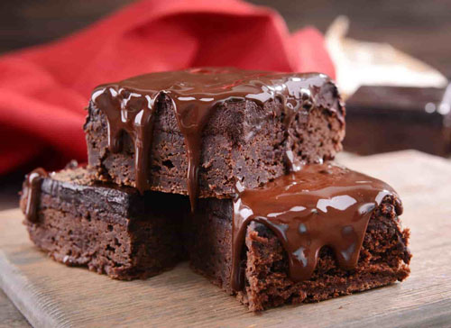

Рецепт брауни

Ингредиенты
Шоколад тёмный 180 г
Масло сливочное 180 г
Яйца 3 шт.
Мука 75 г
Сахар 250 г
Соль 1/4 ч. ложки
Способ приготовления
Растопите шоколад с маслом
Смешайте массу с остальными ингредиентами
Запекайте про 175° 30 минут
На главную страницу